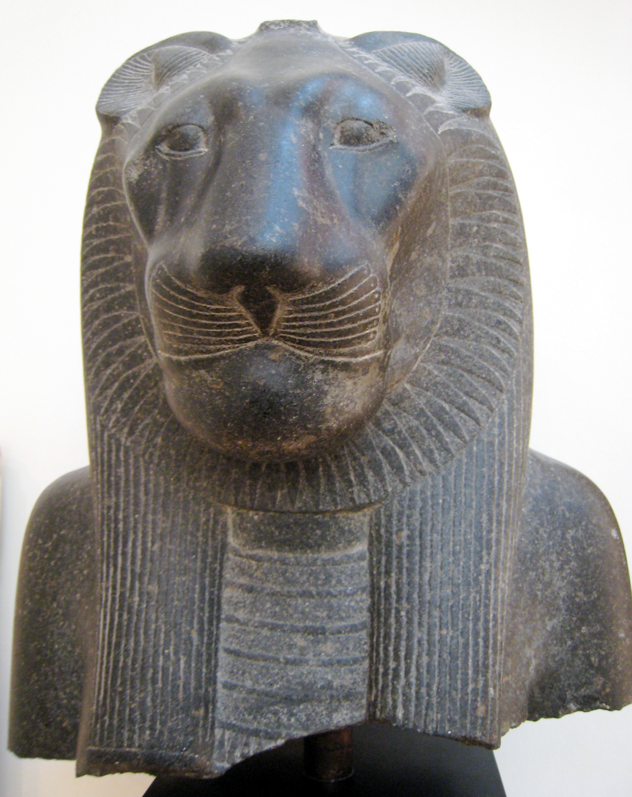
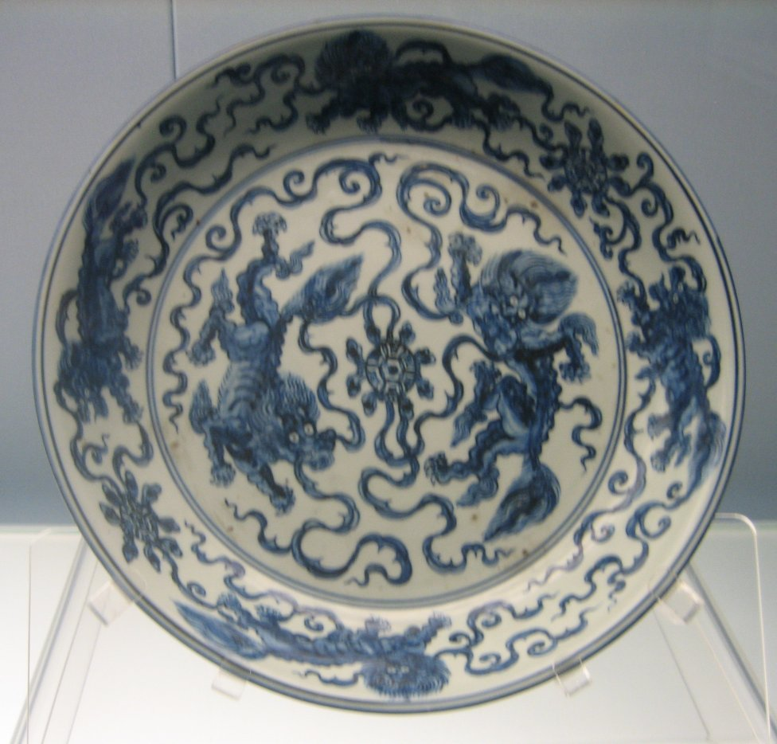
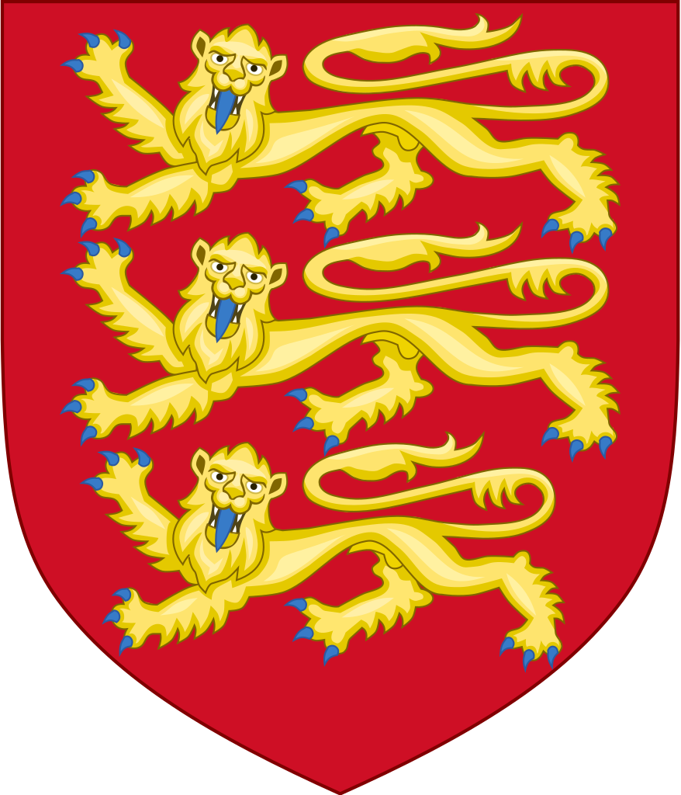

The lion is one of the most widely recognised animal symbols in human culture. It has been extensively depicted in sculptures and paintings, on national flags, and in contemporary films and literature. It appeared as a symbol for strength and nobility in cultures across Europe, Asia and Africa, despite incidents of attacks on people. The lion has been depicted as "king of the jungle" and "king of beasts", and thus became a popular symbol for royalty and stateliness.
Africa
The ancient Egyptians portrayed several of their war deities as lionesses, which they revered as fierce hunters. Egyptian deities associated with lions include: Bast, Mafdet, Menhit, Pakhet, Sekhmet, Tefnut and the Sphinx. In Egypt, the avenging goddess Sekhmet, represented as a lioness, symbolized the heat of the sun. The lion was also believed to act as a guide to the underworld, through which the sun was believed to pass each night. The presence of lion-footed tombs found in Egypt and images of mummies carried on the backs of lions suggests this close association of the lions with the underworld. Partly mummified lions were excavated at the necropolis Umm El Qa'ab in a tomb of Hor-Aha, and at Saqqara in the tomb of Maïa.
In Sub-Saharan Africa, cultural views of the lion have varied by region. In some cultures, the lion symbolises power and royalty, and some rulers had the word "lion" in their nickname. For example, Marijata of the Mali Empire was given the name "Lion of Mali". Njaay, the founder of the Waalo kingdom, is said to have been raised by lions and returned to his people part-lion to unite them using the knowledge he learned from the lions. In parts of West Africa, to be compared with a lion was considered to be a great compliment. Lions were considered the top class in these cultures' social hierarchies. In more heavily forested areas where lions were rare, the leopard represented the top of the hierarchy. In Swahili, the lion is known as simba which also means "aggressive", "king" and "strong".
East and Far East
In the Puranic texts of Hinduism, Narasimha ("man-lion") a half-lion, half-man incarnation or avatar of Vishnu, is worshipped by his devotees and saved the child devotee Prahlada from his father, the evil demon king Hiranyakashipu; Vishnu takes the form of half-man, half-lion creature in Narasimha, where he has a human torso and lower body, and a lion-like face and claws. Singh is an ancient Indian vedic name meaning "lion", dating back over 2,000 years in ancient India. It was originally used only by Rajputs, a Hindu Kshatriya or military caste. After the birth of the Khalsa brotherhood in 1699, the Sikhs also adopted the name "Singh" due to the wishes of Guru Gobind Singh. Along with millions of Hindu Rajputs today, it is also used by over 20 million Sikhs worldwide.
The Asiatic lion is a common motif in Chinese art; it was first used in art during the late Spring and Autumn period (fifth or sixth century BC) and became more popular during the Han Dynasty (206 BC – AD 220) when imperial guardian lions started to be placed in front of imperial palaces for protection. Because lions have never been native to China, early depictions were somewhat unrealistic; after the introduction of Buddhist art to China in the Tang Dynasty after the sixth century AD, lions were usually depicted wingless with shorter, thicker bodies and curly manes. The lion dance is a traditional dance in Chinese culture in which performers in lion costumes mimic a lion's movements, often with musical accompaniment from cymbals, drums and gongs. They are performed at Chinese New Year, the August Moon Festival and other celebratory occasions for good luck.
Europe and Modern Culture
The lion is featured in several of Aesop's fables, which were written in the sixth century BC. The Nemean lion was symbolic in ancient Greece and Rome, represented as the constellation and zodiac sign Leo, and described in mythology, where its skin was borne by the hero Heracles. Myths which have a hero killing a lion, such as the one in which Herakles slays the Nemean lion, symbolize victory over death. Similarly the wearing of lion skin such as the lion skin worn by Herackles also symbolizes victory over death.
"Lion" was the nickname of several medieval warrior-rulers with a reputation for bravery, such as the English King Richard the Lionheart, Henry the Lion, (German: Heinrich der Löwe), Duke of Saxony, William the Lion, King of Scotland, and Robert III of Flanders was nicknamed "The Lion of Flanders" – a major Flemish national icon.
Lions are frequently depicted on coats of arms, either as a device on shields or as supporters, but the lioness is used much less frequently. The formal language of heraldry, called blazon, employs French terms to describe the images precisely. Such descriptions specify whether lions or other creatures are "rampant" (rearing) or "passant" (crouching).
The lion is used as a symbol of sporting teams, from national association football teams such as England, Scotland and Singapore to famous clubs such as the Detroit Lions of the NFL, Chelsea and Aston Villa, a team of the English Premier League, and by the Premiership itself, Eintracht Braunschweig of the Bundesliga, and many smaller clubs around the world.
Lions continue to appear in modern literature as characters including the messianic Aslan in The Lion, the Witch and the Wardrobe and following books from The Chronicles of Narnia series written by C. S. Lewis,[286] and the comedic Cowardly Lion in The Wonderful Wizard of Oz. Lion synmbolism was used from the advent of cinema; one of the most iconic and widely recognised lions is Leo, which has been the mascot for Metro-Goldwyn-Mayer (MGM) studios since the 1920s. The 1960s saw the appearance of the Kenyan lioness Elsa in the movie Born Free, which is based on the factual book of the same title. The lion's role as king of the beasts has been used in cartoons, such as the 1994 Disney animated feature film The Lion King.
Sources
- Infomation on Lions- https://en.wikipedia.org/wiki/Lion
- Banner Image- Jonas Van de Voorde, West African male lion, Cropped Image, CC BY-SA 3.0
- Main lion image- Luis García, Mosaico Trabajos Hércules (M.A.N. Madrid) 01, CC BY-SA 3.0
- Statue of Sekhmet- McLeod, Luxor Sekhmet New Kingdom, marked as public domain, more details on Wikimedia Commons
- Lion Dish- Wmpearl, Dish with underglazed blue design of 2 lions playing a ball, Jingdezhen ware, mid 15th century, Shanghai Museum, marked as public domain, more details on Wikimedia Commons
- Lion Coat of Arms- Sodacan This W3C-unspecified vector image was created with Inkscape., Royal Arms of England, CC BY-SA 4.0
{kind=link}
_01.jpg){kind=link}
{kind=link}
{kind=link}
{kind=link}
{kind=link}